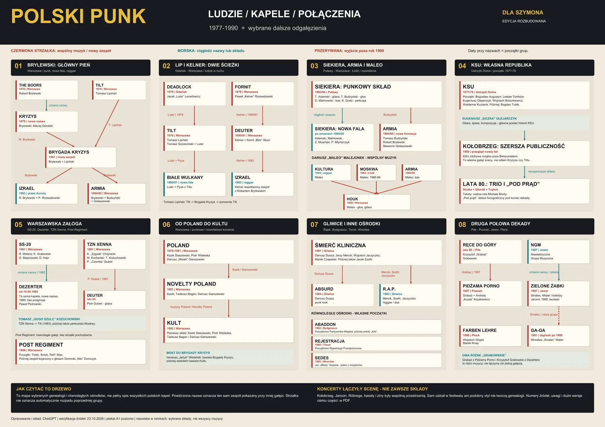

Muzyka · genealogie zespołówPOLSKI PUNK.
POLSKI PUNK.
LUDZIE I KAPELE.
Kto z kim grał, skąd przyszedł i dokąd poszedł? Drzewo polskiej sceny punkowej 1977–1990: Kryzys, Tilt, KSU, Siekiera, Armia, Dezerter i kolejne gałęzie.
Duży plakat, osiem historii, źródła oraz JPG i PDF do pobrania — wszystko na osobnej podstronie.
Wejdź do polskiego punku ↗
POZNAJ POWIĄZANIA ↗